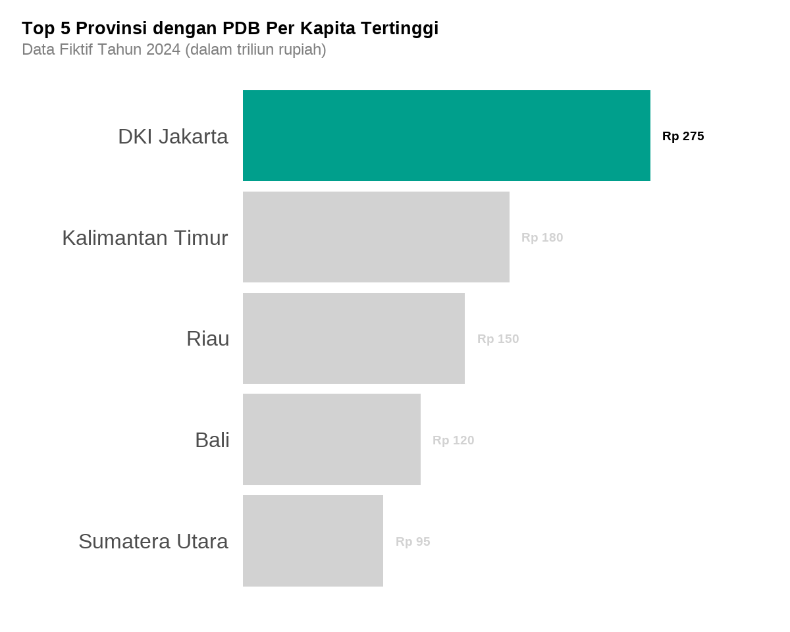

# Setup
library(dplyr)
library(ggplot2)
library(forcats)
library(gt)
library(gghighlight)
library(quartomonothemer)
library(showtext)
font_title <- "Josefin Sans"
font_text <- "Montserrat"
font_sans <- "Noto Sans"
color_base <- "#009F8C"
color_base_light <- "#95DFD6"
color_accent <- "#B75C9D"
color_accent_light <- "#DBA6CC"
gray <- "#bebebe"
darkgray <- "#6d6d6d"
showtext_auto()
style_mono_quarto(
font_title = font_title,
font_text = font_text,
font_sans = font_sans,
color_base = color_base,
color_accent = color_accent,
color_link = color_accent,
color_code = color_base,
size_base = 30
)Pendahuluan
Dalam membuat presentasi atau laporan interaktif dengan Quarto, konsistensi tampilan sangat penting agar konten terlihat profesional. Paket quartomonothemer hadir untuk menyediakan tema monotone (satu warna dasar dengan aksen) yang mudah digunakan untuk. Paket ini dibuat oleh Kazuya Nagimoto. Paket ini mendukung berbagai jenis output Quarto, seperti:
- Quarto Revealjs (slide)
- ggplot2 (grafik)
- gt (tabel)
Di artikel ini, kita akan melihat cara instalasi, konfigurasi, dan contoh penggunaan dengan data fiktif provinsi di Indonesia.
Instalasi
Paket quartomonothemer tersedia di R-universe:``
install.packages(
"quartomonothemer",
repos = "https://kazuyanagimoto.r-universe.dev"
)Pastikan juga Anda menginstal paket pendukung:
install.packages(c("showtext", "ggplot2", "gt", "dplyr", "forcats"))Visualisasi 1
# Data fiktif provinsi Indonesia
provinsi_data <- data.frame(
provinsi = c("DKI Jakarta", "Jawa Barat", "Jawa Tengah",
"Jawa Timur", "Sumatera Utara",
"Sulawesi Selatan", "Kalimantan Timur", "Bali",
"Riau", "Sumatera Selatan"),
populasi_juta = c(10.6, 48.3, 34.3, 39.7, 14.8, 8.9, 3.8, 4.3, 6.4, 8.5),
pdb_per_kapita = c(275, 85, 65, 70, 95, 55, 180, 120, 150, 80),
pulau = c("Jawa", "Jawa", "Jawa", "Jawa", "Sumatera",
"Sulawesi", "Kalimantan", "Bali", "Sumatera", "Sumatera"),
kategori_ekonomi = c("Tinggi", "Sedang", "Rendah", "Sedang", "Sedang",
"Rendah", "Tinggi", "Tinggi", "Tinggi", "Sedang"),
laju_pertumbuhan = c(5.2, 5.8, 5.1, 5.4, 4.9, 6.2, 3.8, 6.8, 4.2, 5.5)
)Visualisasi pertama akan menggunakan paket ggplot2 untuk membuat grafik provinsi dengan PDRB per kapita.
options(repr.plot.width = 10, repr.plot.height = 8)
provinsi_data |>
arrange(pdb_per_kapita) |>
slice_tail(n = 5) |>
mutate(lbl = paste0("Rp ", pdb_per_kapita)) |>
ggplot(aes(pdb_per_kapita, fct_reorder(provinsi, pdb_per_kapita))) +
geom_col(fill = color_base) +
geom_text(aes(label = lbl),
hjust = 0, nudge_x = 8,
size = 5, fontface = "bold", family = font_text) +
scale_x_continuous(expand = expansion(mult = c(0, .2))) +
labs(x = NULL, y = NULL,
title = "Top 5 Provinsi dengan PDB Per Kapita Tertinggi",
subtitle = "Data Fiktif Tahun 2024 (dalam triliun rupiah)") +
theme_quarto() +
theme(panel.grid = element_blank(),
axis.text.x = element_blank(),
axis.ticks = element_blank(),
plot.title = element_text(size = 20, margin = margin(b = 5)),
plot.subtitle = element_text(size = 18, color = "gray50"),
plot.margin = margin(20, 40, 20, 20)) +
gghighlight(provinsi == "DKI Jakarta")
Visualisasi 2
Visualisasi kedua akan menggunakan paket gt untuk membuat tabel populasi.
# Install gtExtras jika belum ada
# install.packages("gtExtras")
# Load library yang diperlukan
library(gtExtras)
# Tabel populasi dengan visualisasi bar
gtf <- provinsi_data |>
arrange(desc(populasi_juta)) |>
slice_head(n = 6) |>
select(provinsi, populasi_juta, pulau) |>
mutate(
populasi_bar = populasi_juta
) |>
gt() |>
cols_label(
provinsi = "Provinsi",
populasi_juta = "Populasi (Juta Jiwa)",
pulau = "Pulau",
populasi_bar = "Visualisasi"
) |>
fmt_number(columns = populasi_juta, decimals = 1) |>
gt_plt_bar_pct(populasi_bar, fill = color_base, scaled = TRUE) |>
tab_header(
title = "Populasi Provinsi Terbesar di Indonesia",
subtitle = "Data Fiktif Tahun 2024"
) |>
opt_table_font(font = google_font(name = font_text)) |>
gt_theme_quarto()
gt:::as.tags.gt_tbl(gtf)| Populasi Provinsi Terbesar di Indonesia | |||
|---|---|---|---|
| Data Fiktif Tahun 2024 | |||
| Provinsi | Populasi (Juta Jiwa) | Pulau | Visualisasi |
| Jawa Barat | 48.3 | Jawa | |
| Jawa Timur | 39.7 | Jawa | |
| Jawa Tengah | 34.3 | Jawa | |
| Sumatera Utara | 14.8 | Sumatera | |
| DKI Jakarta | 10.6 | Jawa | |
| Sulawesi Selatan | 8.9 | Sulawesi | |